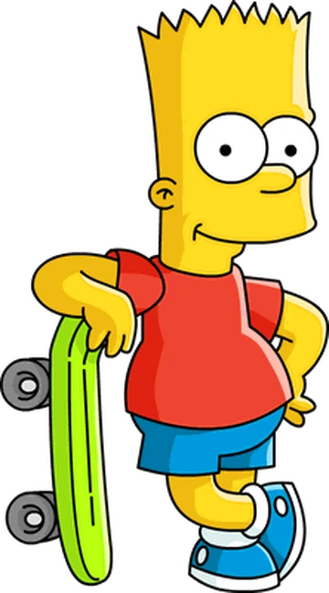

About the Birthday Boy
Bartholomew Jojo "Bart" Simpson was born on November 26, 1976, and is now turning 48, even though he still looks like a 10-year-old Boy. Bart Simpson grew up in a poor neighborhood in Springfield, and his dreams of celebrating his birthday in Las Vegas have finally come true. He's been in middle school for almost 3 decades, he has an alcoholic father and mother who stays at home with the kids and two younger sisters, one infant and one who's always been the pride of the family.